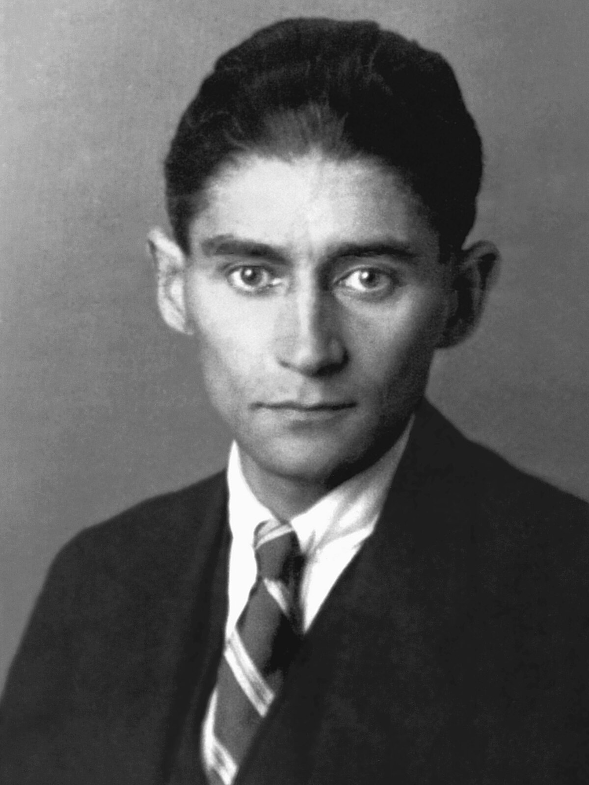

პროცესი
ინფორმაცია წიგნზე
ავტორი: ფრანც კაფკა
ჟანრი: აბსურდიზმი,ფილოსოფიური,ფანტასტიკა
გამოშვების თარიღი: 1925 წელი
აღწერა:
დაწერილი 1914 წელს, მაგრამ გამოქვეყნებული 1925 წლამდე, კაფკას გარდაცვალებიდან ერთი წლის შემდეგ, სასამართლო არის საშინელი ამბავი ჯოზეფ კ.-ზე, პატივცემული ბანკის ოფიცრის შესახებ, რომელიც მოულოდნელად და აუხსნელად დააპატიმრეს და უნდა დაიცვას თავი ბრალდებისგან, რომლის შესახებაც მას არ შეუძლია ინფორმაციის მიღება. . იქნება ეს წაკითხული როგორც ეგზისტენციალური ზღაპარი, იგავი თუ წინასწარმეტყველება თანამედროვე ბიუროკრატიის ზედმეტობაზე, რომელიც შერწყმულია ტოტალიტარიზმის სიგიჟესთან, სასამართლო პროცესი მკითხველთა თაობებისთვის შემზარავი ჭეშმარიტებით რეზონანსს განიცდის.
ფრანც კაფკა (დაიბადა 3 ივლისი, 1883, პრაღა, ბოჰემია, ავსტრია-უნგრეთი [ახლანდელი ჩეხეთის რესპუბლიკა] - გარდაიცვალა 1924 წლის 3 ივნისს, კირლინგი, ვენის მახლობლად, ავსტრია) იყო გერმანულენოვანი მწერალი მხატვრული ლიტერატურისა, რომლის ნაწარმოებები, განსაკუთრებით რომანი Der Prozess (1925; სასამართლო პროცესი) და მოთხრობა Die Verwandlung (1915; მეტამორფოზა) - გამოხატავს შფოთვას და გაუცხოებას, რომელსაც ბევრი გრძნობს მე-20 საუკუნის ევროპასა და ჩრდილოეთ ამერიკაში.
ავტორის ხელმოწერა: